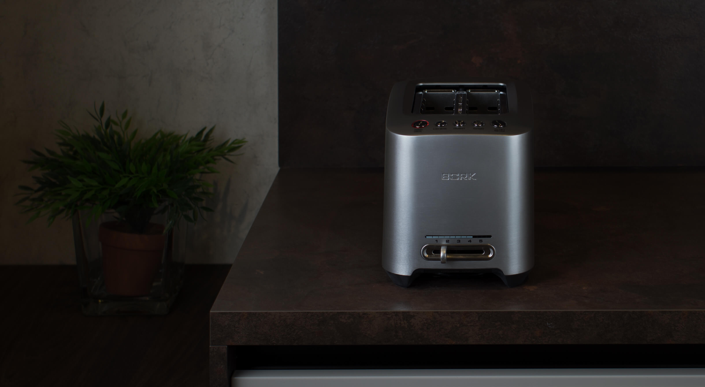
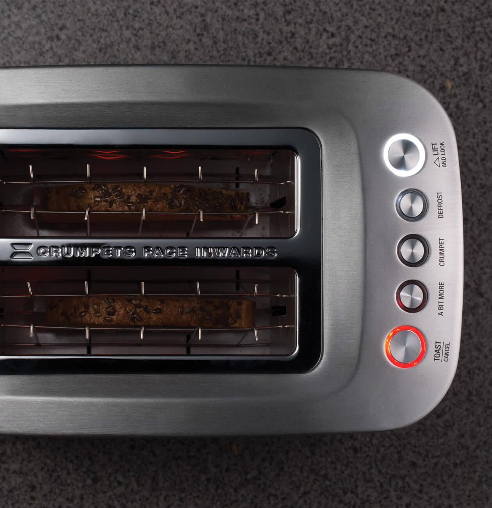
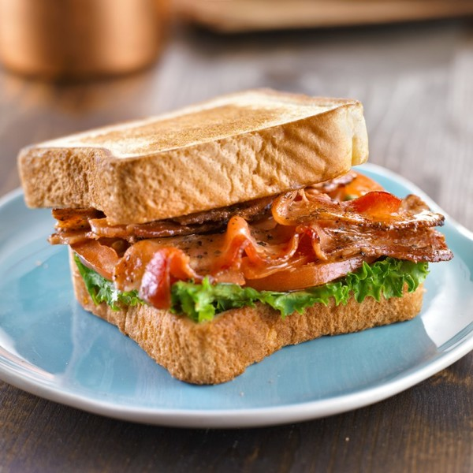
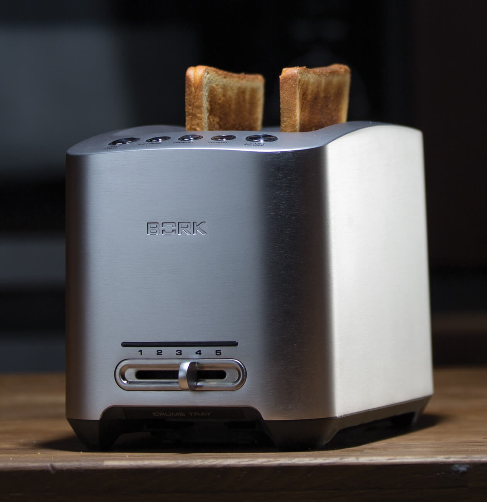
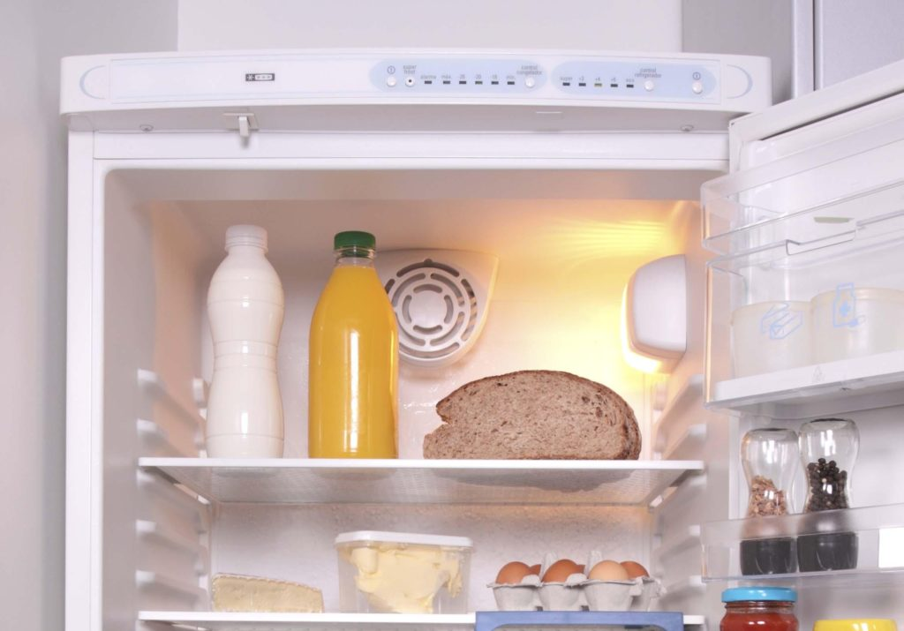
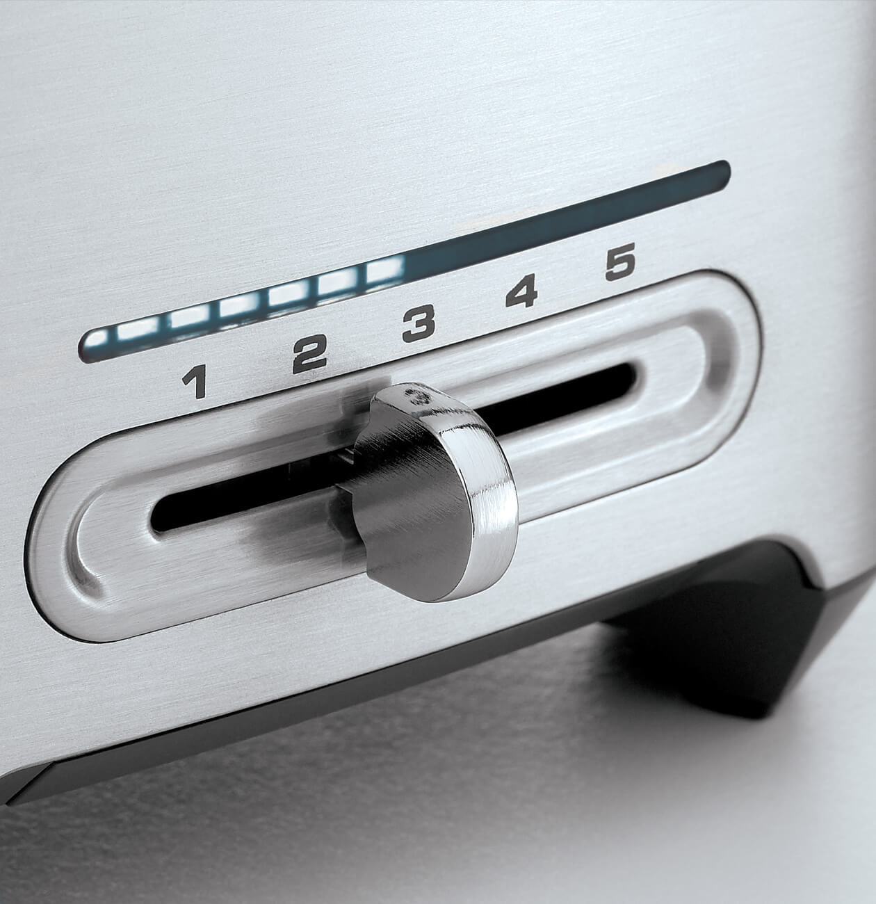
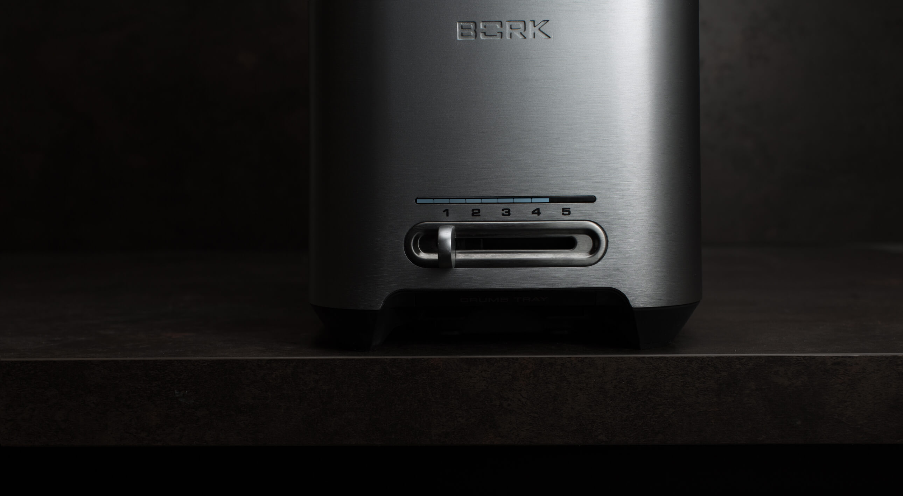
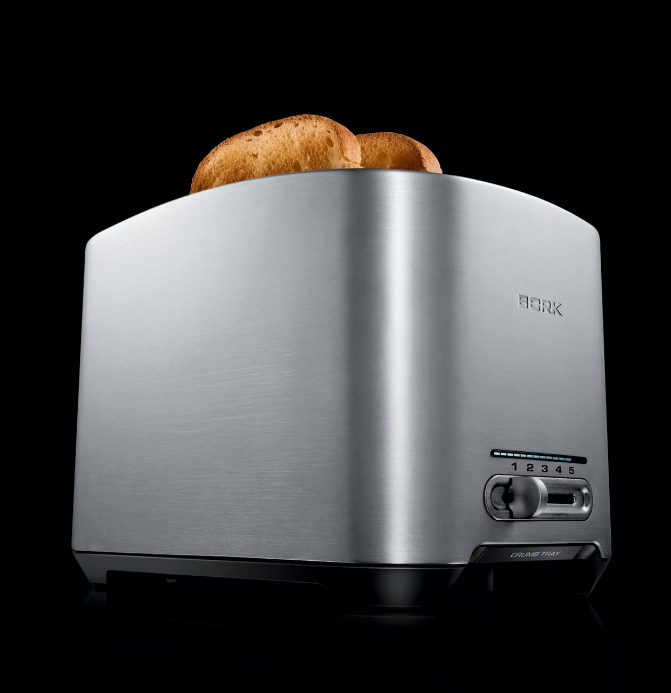
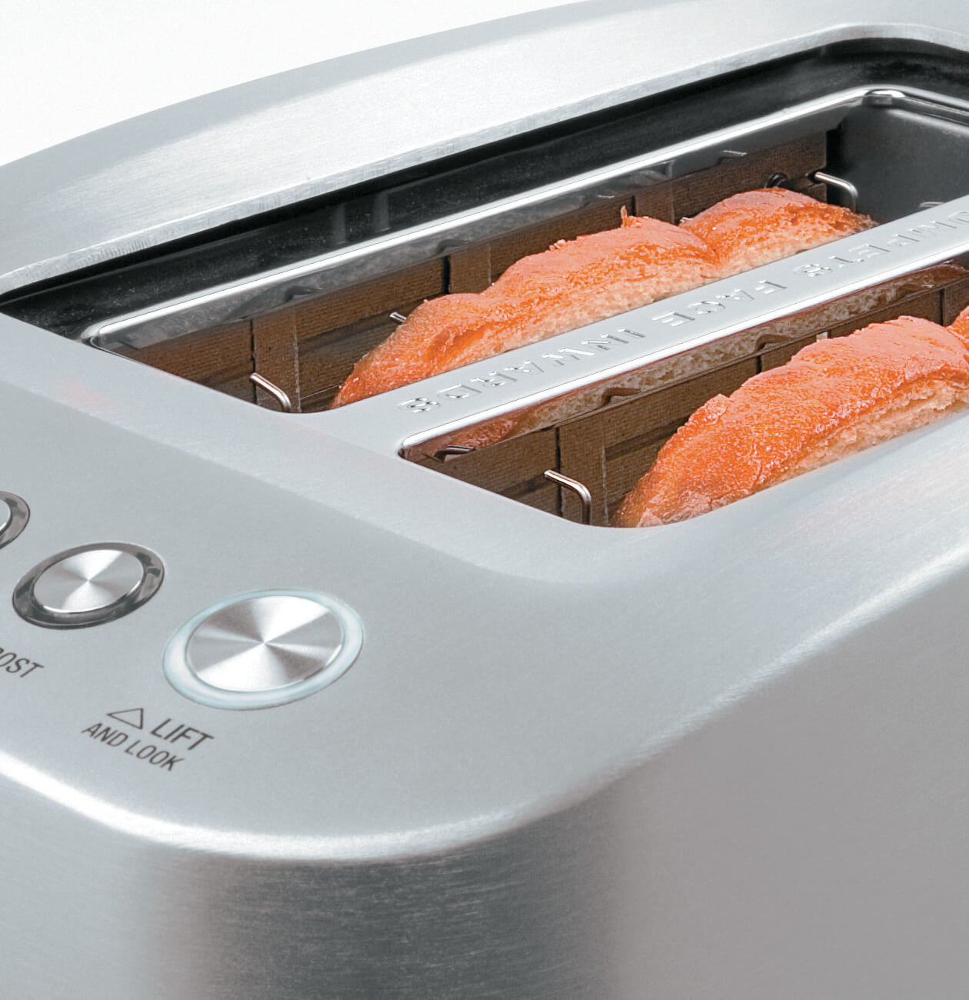

Тостер T800
Стильная современная модель с широким функционалом.
Автоматические режимы
Тостер оснащен 4 режимами: TOAST, A BIT MORE, CRUMPET, DEFROST
TOAST – Поджаренные тосты менее калорийны, чем обычные мучные изделия, поэтому диетологи рекомендуют их людям, которые хотят потерять лишние килограммы. А так же тосты очень полезны для желудочно-кишечного тракта.
A BIT MORE – Что может быть вкуснее утренней чашечки бодрящего кофе и хрустящего ароматного тоста. В тостере Т781 увеличенные загрузочные слоты, это решение позволяет прожаривать хлеб разного размера, не ограничивая Вас во вкусах.

CRUMPET – Приготовить свой уникальный бургер и сделать его потрясающе вкусным, поможет функция односторонней прожарки. Равномерная хрустящая корочка на поверхности булочки не позволит соусу впитаться в хлеб.
DEFROST – С каждым днём растёт количество людей замораживающих хлеб. Этому способствует 2 основные причины: 1) Хлеб значительно дольше хранится; 2) Это делает хлеб более полезным. Ведь замораживая, а затем подсушивая хлеб в тостере, мы преобразуем углеводы с высоким гликемическим индексом в углеводы с низким гликемическим индексом. А они в свою очередь преобразуются в энергию равномерно, и мы успеваем ее потратить. В результате в организме не откладывается жир.
Тосты по вашему вкусу
Модель T800 позволяет выбрать одну из 5 степеней поджаривания ломтиков.
Индикация времени
Тостер отображает обратный отсчет времени в процессе поджаривания тостов.
Плавность работы
Специальный элемент подъёма и опускания тостов, работает без пружин. Это позволяет тостеру работать очень тихо, не издавая «выстрела» по окончанию режима и избегая вылетающих во все стороны крошек хлеба.
Контроль готовности
С функцией LIFT&LOOK легко контролировать процесс поджаривания без прерывания работы, а после окончания цикла тосты автоматически поднимаются.
Технические характеристики
Мощность 840-1000 Вт
Число степеней поджаривания 5
Число режимов 4
Вес 2,5 кг
Материал корпуса Цельнолитой металл
Срок гарантии 1 год
Число отсеков 2
Автоцентрирование Есть
Контроль готовности Есть
Поддон для крошек Съемный
Страна производства Китай